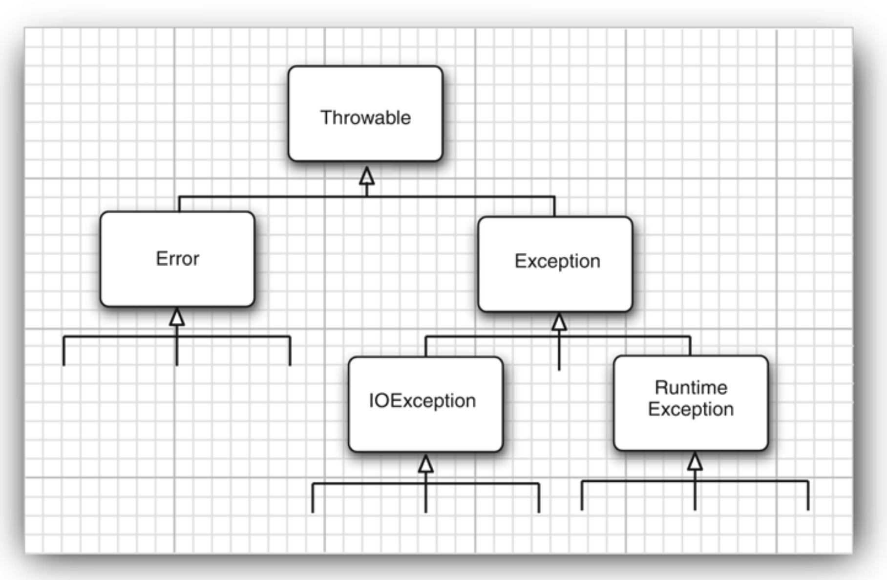
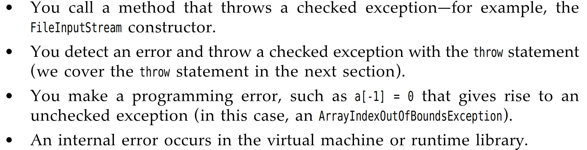

Chapter7 Exception
It is time to turn to the mechanisms the Java programming language has for dealing with the real world of bad data and buggy code.
- Notify the user of an error
- Save all work
- Allow user to gracefully exit the program
Java uses a form of error handling exception handling.
When an error occurs that, you might want to 2 cases: - Return to a safe state and enable the user to execute other commands; - Allow the user to save all the works and terminate the program gracefully.
当然，以上的两种情况并不容易，因为侦查发生错误的代码和实际上发生错误的代码相去甚远，那么exception handling的使命就是将错误发生的控制权转移到能够处理错误的程序上。所以你应该提前的预计错误的发生。
很多时候，我们总是寄希望于让错误得到return,比如在浏览文件的末尾的时候，会返回-1。但事实上很多时候，并没有错误会返回。我们也无从而知。在Chapter5中的时候，我们知道了Java为每一个method提供了一个可代替的出口，当它无法正常的完成它的任务的时候。在这种情况下，它并不会返回一个expectation value，而是会throws一个对象->将错误的信息封装的object. 当throws了一个错误的对象的时候，不会重新开始程序，但这时候expection handling会寻找可以解决这个object的exception handler.
Throwable Class
事实上，我们抛出的exception对象是一个来自于Throwable类的实例

上面的类分成了两部分，我们重点考虑的是Exception，首先，这里的Error其实大概率是不用考虑的，它更多是来自内在的错误，亦或者说是来自Java runtime System中的错误。而Exception中的RuntimeException才是我们真正平时编码时候发生的错误。
对于RuntimeException发生的一些常见的错误：
- A bad cast 类型转化错误
- An out-of-bounds array access 数组边界越界
- A null pointer acess 获取了一个
null对象 而FileCoundNOTFind这种错误并不是发生在你代码上的逻辑/语法错误，而是在尝试打开文件的时候就已经发生错误了。
checked or unchecked
我们这里考虑checked的含义，它表示的是在程序编译运行前就需要进行的检查，官方的定义是：
The Java Language Specification calls any exception that derives from the class
Erroror the classRuntimeExceptionanuncheckedexception.All other exceptions are calledcheckedexceptions.
很明显，你在运行Java代码之前，你并不知道你会遇到什么错误，这个是无法被checked.但有些错误，类似于IO/文件读入...等错误是需要在编译前就发现的，并不是代码本身的逻辑发生的错误，这些错误是要checked.
Declaring Checked Exception
The idea is that : a method will not only tell the Java compiler what values it can return, It is also going to tell the compiler what can go wrong. 提前告诉Java可能出错的地方。
1 | |
 以上就是可能出现的四种情况，我们需要牢记;
If the superclass throws no Exceptions,the subclass must not throw the Exception!
Catch the Exception
- If any Exception happened in the
tryblock - skip the remainder code in the
tryblock and do thecatchclause - If no exception ->skip
You can catch more than one Exception in the catch clause.
1 2 3 4 5 6 7 | |
上面显示了可以catch多个Exceptions;
也可以rethrow;
The finally Clause
首先，我们知道当遇到Exception的时候，我们会停止这个method中的进程，然后退出这个方法。但这里有个问题，如果你在method中进行了资源的获取，但你退出这个代码的时候，需要把这些资源给释放掉，但是只有你在原来的方法中才知道这些。这样finally子句的目的就是为了解决这个问题。
1 2 3 4 5 6 7 8 9 10 | |
像上述的，倘若没有遇到问题，在完成try clause中的内容的时候，会自动跳过2,3的部分，直接完成finally部分的内容。也就是结束资源。
Whether it encounters the
Exception-> we all need to execute thefinallyclause.
try-with-resource satement
这个语句是用于自动管理资源（文件/数据库连接等）的结构
使用 try-with-resource语句，可以确保在语句结束的时候自动关闭资源，避免资源泄漏。
1 2 3 4 5 6 7 8 9 10 11 12 13 14 15 16 17 18 19 20 21 22 23 24 | |
try语句的时候我们调用了获取资源的语句，尤其是一些进行需要显性关闭资源的语句，可以进行自动的资源管理。无论会不会完成后续的catch,都会直接的完成close()